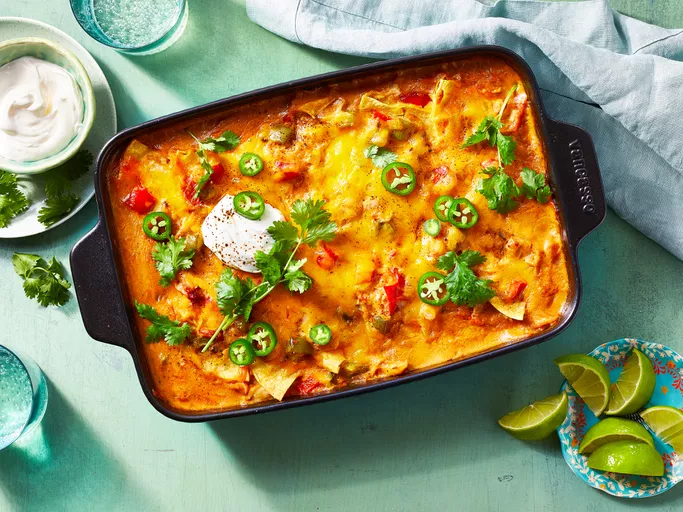

Chicken Casserol

Description
King Ranch chicken is a Tex-Mex casserole with unknown origins, though it's assumed the dish is named after King Ranch, Texas. The casserole consists of pulled chicken, canned soup, green chiles, corn tortillas, sour cream, veggies, and lots of cheese.
Ingredients
-
Vegetables
An onion and two bell peppers are sautéed in vegetable oil. You can add a poblano for an extra hint of heat.
-
Canned Soup
You'll need two cans of soup: Condensed cream of chicken soup and condensed cream of mushroom soup.
-
Canned Tomatoes and Chile Peppers
A can of diced tomatoes and green chile peppers gives the casserole its signature flavor.
-
Chicken Broth
Use store-bought or homemade chicken broth.
-
Sour Cream
A couple tablespoons of sour cream makes the sauce rich, creamy, and slightly tangy.
-
Spices and Seasonings
Cumin, ancho chile powder, dried oregano, and chipotle chile powder gives this King Ranch casserole spicy, savory, earthy, and subtly smoky flavors.
-
Chicken
You can use any type of cooked chicken — this is a great opportunity to get rid of leftovers! For a shortcut option, try rotisserie chicken.
-
Cheese
This recipe calls for shredded Cheddar cheese, but some reviewers recommend using Pepper Jack for even more heat.
-
Tortillas
Use corn tortillas cut into quarters. Some reviewers use Doritos or tortilla chips for a fun, crunchy twist.
How to Make King Ranch Chicken Casserole
-
Sauté Veggies
Sauté the onion, red bell pepper, and green bell pepper until they're warmed through.
-
Make Cream Sauce
Stir together the sautéed vegetables, canned soups, diced tomatoes, chicken broth, sour cream, and spices in a large bowl until the ingredients are well-combined.
- Assemble the Casserole
Spread a few tablespoons of the sauce on the bottom of a baking dish. Top the sauce with about half the chicken. Spread half the sauce over the chicken, then top with ⅓ of the cheese. Arrange a layer of tortillas over the cheese. Add remaining chicken, then top with the remaining sauce (reserving ½ cup). Top with ½ of the remaining cheese and remaining tortillas, then with the reserved sauce, and the remaining cheese.
- Bake the Casserole
Bake in an oven preheated to 350 degrees F until bubbling. Set the oven to broil, then cook for another few minutes until the top is golden.
Back to Home